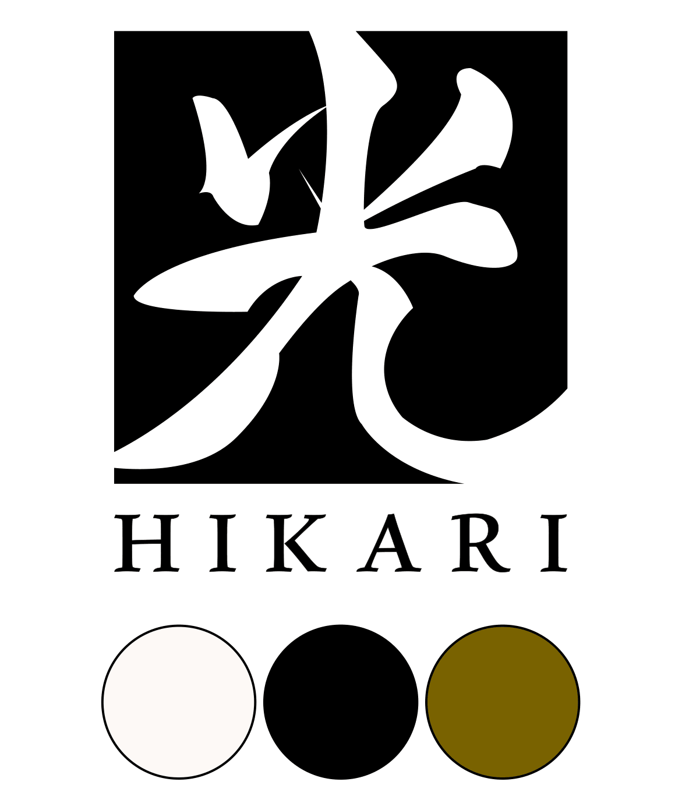

hikari-logo-mockup.jpg
Branding
Identité visuelle — Illustrator / Photoshop
HIKARI Project
Créer une marque de zéro
Conception d'une identité visuelle premium inspirée de l'artisanat japonais : logotype basé sur le kanji 光 en contre-forme, palette ivoire / noir / kaki doré, typographies Playfair Display & Fira Sans.
L'IA a été utilisée en phase d'idéation pour générer des pistes visuelles, évaluées et affinées manuellement dans Illustrator — piloter l'outil, pas le subir.
Illustrator
Photoshop
IA générative
Charte graphique
Voir le site HIKARI